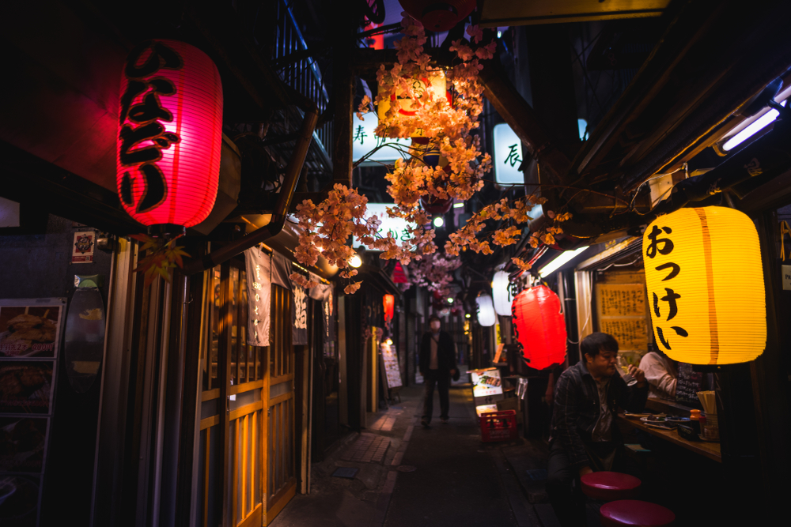

Tokyo- Japan's capital
A website by Mariella Simongauz
history
what to see in Tokyo
Current date:
Tokyo, Japan's busy capital, mixes the ultramodern and the traditional, from neon-lit skyscrapers to historic temples. The opulent Meiji Shinto Shrine is known for its towering gate and surrounding woods. The Imperial Palace sits amid large public gardens. The city's many museums offer exhibits ranging from classical art (in the Tokyo National Museum) to a reconstructed kabuki theater (in the Edo-Tokyo Museum)

What to see in Tokyo
Sensoji Temple
- Asakusas Sensoji Temple is a tremendously popular destination for visitors. Beyond the iconic Kaminarimon Gate is Nakamise Dori souvenir-shopping street, which leads to a complex of fascinating religious structures.
Meiji Jingu
- Meiji Jingu (Shinto Shrine) is set in a soothing forest only a few minutes walk from JR Harajuku Station. The shrine was built to commemorate the virtues of Emperor Meiji and Empress Shoken. In 2020 the shrine marks its 100th anniversary.
Hamarikyu Gardens
- Hamarikyu Gardens is a great place to relax and to reflect on the history of Tokyo when it was still called Edo. Different feudal lords used the space for various purposes, ranging from recitals and rice cultivation to military training and falconry.
Edo-Tokyo Open Air Architectural Museum
- Spend a day away from the bustling city streets exploring a museum of relocated historical buildings. Set in a beautiful park in Tokyo's western suburbs.
| Neighbourhoods of Tokyo |
District |
Population |
| Hachijo |
Hachijo-machi |
7,516 |
| Aogashima-mura |
169 |
| Miyake |
Miyake-mura |
2,451 |
| Mikurajima-mura |
328 |
| Total Population: 37,274,000 |
Basic facts
There are more than 150 museums in Tokyo.
Tokyo will be the host of the Olympic Games in 2021.
The city has previously hosted the 1964 Summer Olympics.
There are over 4000 shrines and temples in Tokyo.
Tokyo Metropolis has 882 interconnected rail stations.
Sources
swedishnomad.com/facts-about-tokyo/
macrotrends.net/cities/21671/tokyo/population